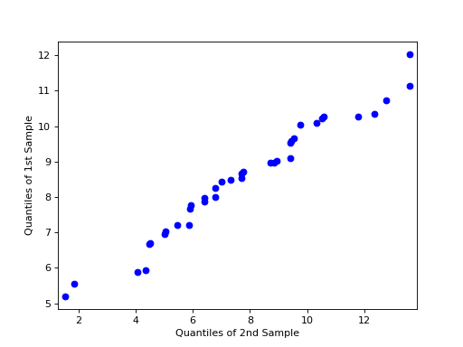

statsmodels.graphics.gofplots.qqplot_2samples¶
-
statsmodels.graphics.gofplots.qqplot_2samples(data1, data2, xlabel=None, ylabel=None, line=None, ax=None)[source]¶ Q-Q Plot of two samples’ quantiles.
Can take either two ProbPlot instances or two array-like objects. In the case of the latter, both inputs will be converted to ProbPlot instances using only the default values - so use ProbPlot instances if finer-grained control of the quantile computations is required.
- Parameters
- data1, data2array-like (1d) or ProbPlot instances
- xlabel, ylabelstr or None
User-provided labels for the x-axis and y-axis. If None (default), other values are used.
- linestr {‘45’, ‘s’, ‘r’, q’} or None
Options for the reference line to which the data is compared:
‘45’ - 45-degree line
‘s’ - standardized line, the expected order statistics are scaled by the standard deviation of the given sample and have the mean added to them
‘r’ - A regression line is fit
‘q’ - A line is fit through the quartiles.
None - by default no reference line is added to the plot.
- axMatplotlib AxesSubplot instance, optional
If given, this subplot is used to plot in instead of a new figure being created.
- Returns
- figMatplotlib figure instance
If ax is None, the created figure. Otherwise the figure to which ax is connected.
See also
scipy.stats.probplotNotes
Depends on matplotlib.
If data1 and data2 are not ProbPlot instances, instances will be created using the default parameters. Therefore, it is recommended to use ProbPlot instance if fine-grained control is needed in the computation of the quantiles.
Examples
>>> import statsmodels.api as sm >>> import numpy as np >>> import matplotlib.pyplot as plt >>> from statsmodels.graphics.gofplots import qqplot_2samples >>> x = np.random.normal(loc=8.5, scale=2.5, size=37) >>> y = np.random.normal(loc=8.0, scale=3.0, size=37) >>> pp_x = sm.ProbPlot(x) >>> pp_y = sm.ProbPlot(y) >>> qqplot_2samples(pp_x, pp_y) >>> plt.show()
(Source code, png, hires.png, pdf)
>>> fig = qqplot_2samples(pp_x, pp_y, xlabel=None, ylabel=None, ... line=None, ax=None)
{kind=link}
{kind=link}